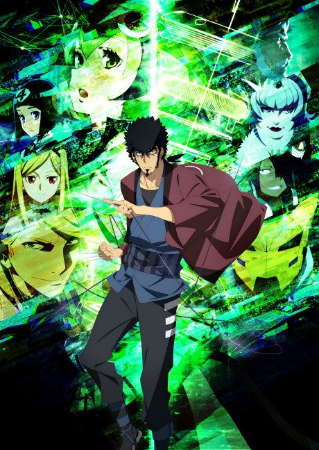
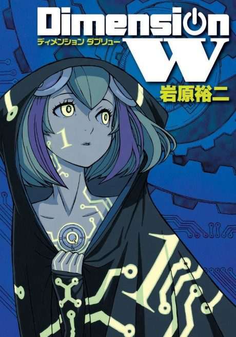
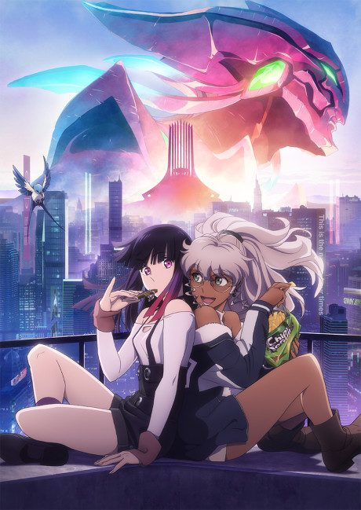
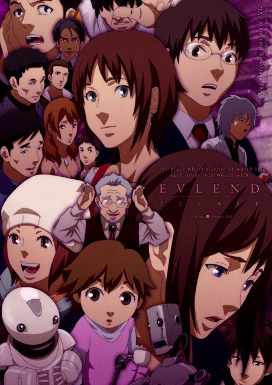

Dimension W
ディメンション ダブリュー
In 2072, Kyoma, a man who refuses to use the new energy source coils, hunts illegal ones with his android partner Mira.
After the anime, read the manga from Chapter 31.
6.8AniList score
—Animeter, no votes yet
12episodes
Rate it or report where you stopped
Is it worth pushing through?
Built from what visitors report across all 12 episodes.
Loading reports…Checking what other people said about this one.
Sign in above with your email to add your report.
More like Dimension W
 Original7.6
Original7.6

Original5.9 Done8.4
Done8.4
 Original8.2
Original8.2
 Own end8.2
Own end8.2
 Film7.9
Film7.9
 Unclear7.1
Unclear7.1
 Original7.7
Original7.7
 Done7.1
Done7.1

Original7.7 VN7.3
VN7.3
 Film7.5
Film7.5